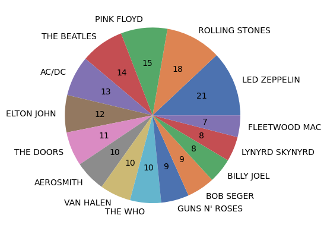
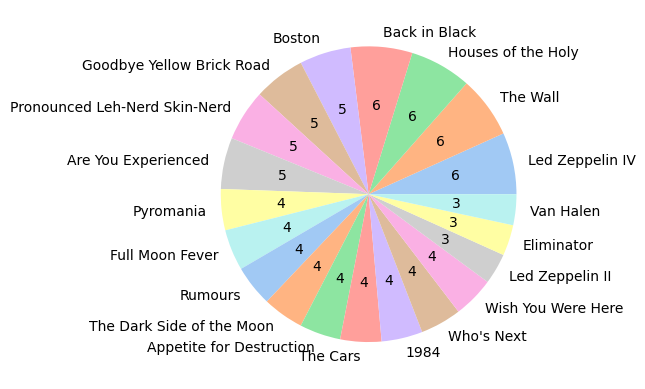
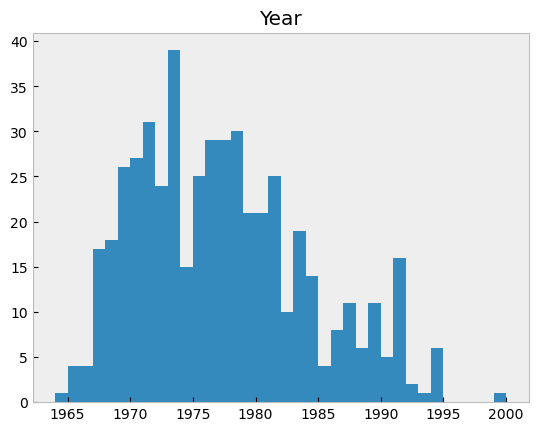
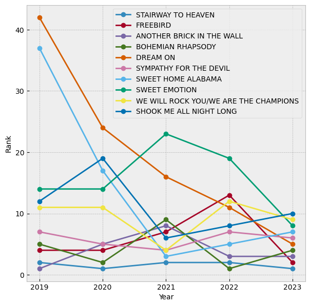
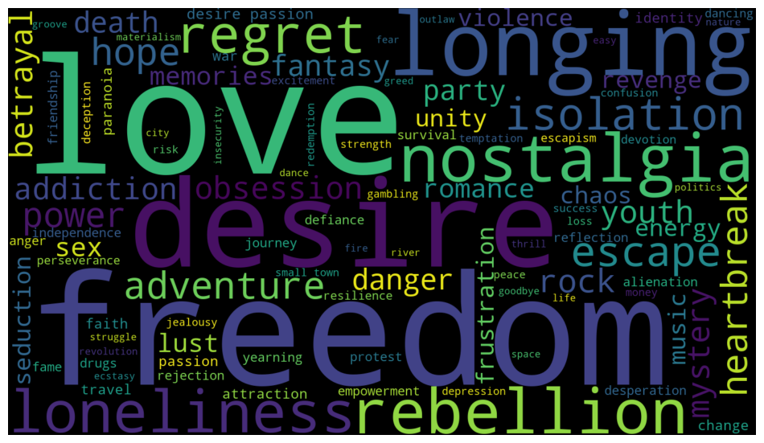

Being classic rock and data fans, we took a look at the WDVE Memorial Day Top 500 songs list from 2023. OpenAI's ChatGPT was used to enrich the data - given song names and artists, we used it to determine the album each song was originally released on and the initial release date (in the US). We also had the AI model give us some general themes of each song.
Led Zeppelin has the most songs on the top 500 this year with 21! The Stones are 3 behind with 18, and 8 other bands have 10 or more songs in the top 500. Fleetwood Mac's 7 songs on the list rounds out the top 20 artists. The top three bands, Zeppelin, The Stones and Pink Floyd, make up almost 11% of the top 500 songs.
Four albums have 6 entries on the top 500 list, including two from Zeppelin and one each from Pink Floyd and AC/DC. Zeppelin and Floyd each have 3 albums in the top 20.
The 70's are well represented - the top 6 years that had the most songs released are 73, 71, 78, 77, 76, and 70. The earliest recorded song on the list was House of the Rising Sun by The Animals (1964). The most recently released song was 2000's hit Born Too Late by Pittsburgh's own The Clarks.
We wanted to see how this year's top 10 songs have ranked over the past 5 years. Stairway has been 1 or 2 each year. Aerosmith's Dream On had the largest jump into the top 10, starting at #42 in 2019 and slowly climbing up the rankings to land at 5 this year. Four songs - Stairway, Another Brick in the Wall, Bohemian Rhapsody and Sympathy for the Devil, have been in the top 10 each of the past 5 years.
Using OpenAI's ChatGPT model, we generated 3 themes for each song. For example, Elton John's "Rocket Man" included the themes of loneliness, isolation and space. For Van Halen's "Hot for Teacher" it came up with lust, obession and youth. We plotted the most common words into a word cloud (the bigger the word, the more frequently it turned up). The top 5 themes for the songs in the top 500 were love, freedom, desire, longing and nostalgia.
